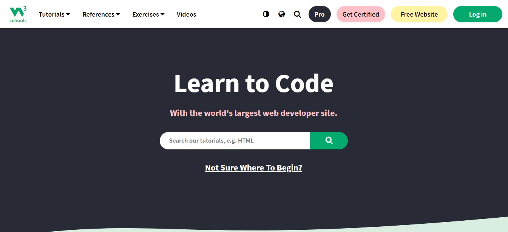
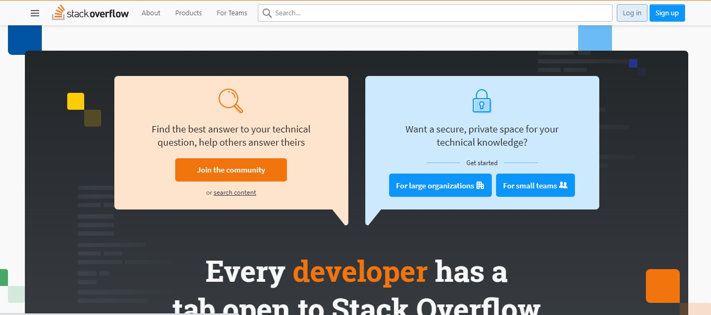
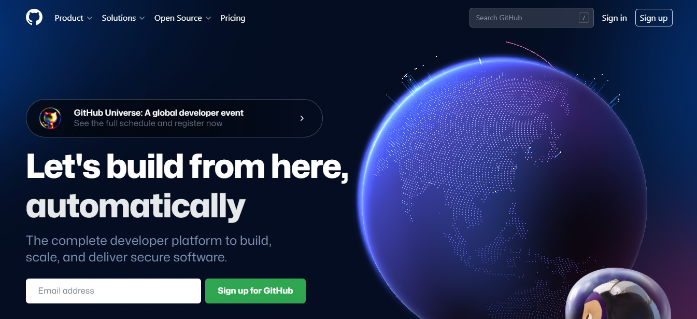

W3Schools is a freemium educational website for learning coding online. Initially released in 1998, it derives its name from the World Wide Web but is not affiliated with the W3 Consortium. W3Schools offers courses covering all aspects of web development. W3Schools also publishes free HTML templates.

Stack Overflow is a question and answer website for professional and enthusiast programmers. It is the flagship site of the Stack Exchange Network. It was created in 2008 by Jeff Atwood and Joel Spolsky. It features questions and answers on a wide range of topics in computer programming.

W3Schools is a freemium educational website for learning coding online. Initially released in 1998, it derives its name from the World Wide Web but is not affiliated with the W3 Consortium. W3Schools offers courses covering all aspects of web development. W3Schools also publishes free HTML templates.
